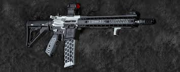

Американская полуавтоматическая винтовка под патрон 5,56×45 мм.
Выпускается с 1963 года, поступает в продажу в качестве гражданского
оружия для самообороны, охоты и т.п., является штатным оружием полиции.
Была разработана компанией ArmaLite на основе AR-10 в качестве
перспективной штурмовой винтовки для армии США. Изготовлена с
применением алюминиевых сплавов и пластика. В 1959 году из-за финансовых
трудностей ArmaLite продала права на конструкцию компании Colt’s
Manufacturing Company. В начале 1960-х годов автоматический вариант
AR-15 был принят на вооружение ВВС США под индексом M16, позже винтовку
приняли на вооружение ВМС, а затем Армия США, с тех пор оригинальный
заводской индекс AR-15 использовался для гражданских и полицейских
модификаций военной винтовки.
В период после 1963 года товарный знак AR-15 принадлежит компании
Colt’s Manufacturing Company и относится исключительно к самозарядным
винтовкам. Вариации AR-15 изготовляются и другими производителями, но
под другими торговыми марками.
Масса, кг 2,27—3,9
Длина, мм 991
Длина ствола, мм 508 (стандарт)
Патрон 5,56×45 мм НАТО .338 Spectre
Принципы работы Отвод пороховых газов, поворотный затвор
Скорострельность, выстрелов/мин 700—950 (при стрельбе очередями)
Начальная скорость пули, м/с 975
Прицельная дальность, м 400—600 (в зависимости от длины ствола)
Прицел диоптрический це́лик и мушка
Все права защищены